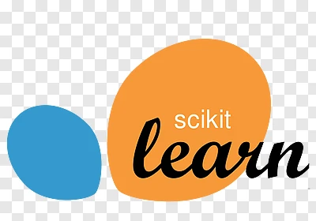

Programming Languages
- Python

- R

- SQL

- HTML, JavaScript, CSS

Libraries
- Pandas
- Matplotlib

- Numpy

- Scipy

- sklearn 
- Seaborn

Statistical Methods
I am proficient in utlizing key statisical methods to make the most accurate data driven decisions. These include:
- Sum of squared residuals
- Bivariate & univariate t-test
- Linear Regression
- Logistic Regression
- Correlation Coefficient
- Pearson's Chi Squared Test
- ANOVA
Visualization Tools
- Tableau

- PowerBI
- Excel
Work Experience
Data Analyst Intern at Health Alliance Plan Health Insurance (2025 - Present)
Engagement with several fields of data analytics in healthcare using tools such as DAX, PowerBI, Microsoft Excel, and merging SQL databases to make visualizations.
Teaching Assistant at University of Michigan (2024 - Present)
Helped other students learn Python programming at the introductory level (SI 101) as well as the intermediate level (SI 201).